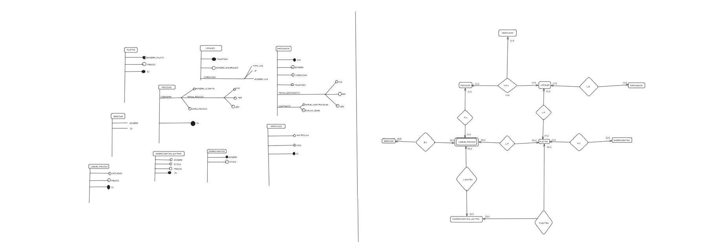

Uso de Schema en XML
XML Schema (XSD) es una herramienta esencial para definir la estructura y las restricciones de un documento XML. A diferencia de DTD (Document Type Definition), Schema utiliza sintaxis XML y permite una validación más avanzada, estableciendo reglas precisas sobre los tipos de datos, la obligatoriedad de elementos y atributos, y la organización de la información dentro de un documento XML.

XML Schema garantiza que los datos XML sean válidos y cumplan con una estructura bien definida. Es ampliamente utilizado en aplicaciones web, intercambio de datos entre sistemas y definición de servicios en tecnologías como SOAP y REST. Gracias a este aprendizaje, puedo crear documentos XML bien estructurados y asegurarme de que los datos cumplan con los requisitos esperados en distintos entornos.
Las principales características del schema son:
Definición estructurada: Permite describir la jerarquía de elementos y atributos en un archivo XML.
Especificación de tipos de datos: Soporta tipos de datos simples (números, fechas, booleanos, cadenas) y complejos (estructuras con múltiples elementos).
Restricciones y validación: Permite establecer restricciones como valores mínimos y máximos, longitudes específicas y formatos obligatorios.
Compatibilidad con espacios de nombres: Facilita la organización y reutilización de definiciones en distintos documentos XML.